Kacper Frelek
Aerospace engineer (M.Sc. Eng.) · Aerodynamics & CFD
I'm an aerospace engineer based in Warsaw, working in aerodynamics and computational fluid dynamics. Since December 2025 I have been a CFD engineer at the Space Technology Center of the Warsaw Institute of Aviation, simulating rocket engines. Before that I was an aerodynamics intern at Rocket Factory Augsburg and spent two years in turbomachinery aeromechanics at EDC. My master's thesis at Warsaw University of Technology validated laminar aeroheating models for the Mars Science Laboratory forebody against Caltech T5 shock-tunnel data.

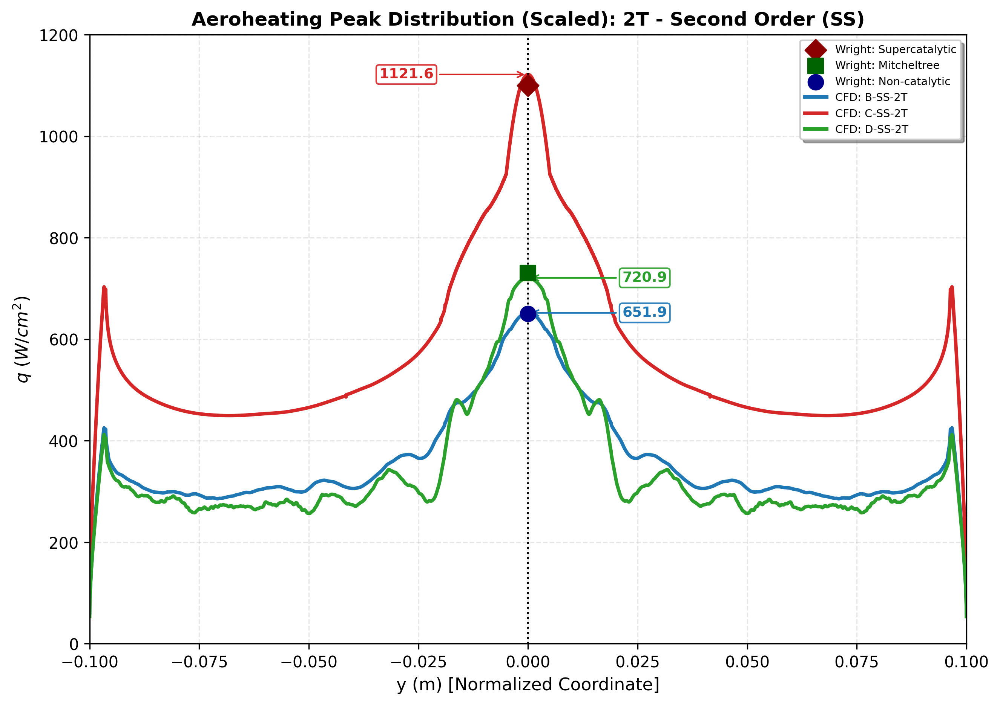
Experience
-
12/2025 – present
CFD Engineer
Warsaw Institute of Aviation, Space Technology Center · Warsaw
CFD of rocket engines, from geometry preprocessing and meshing to solving and post-processing. I also optimise internal flow-guiding control surfaces for rocket propulsion systems.
-
08/2025 – 11/2025
Aerodynamics Intern
Rocket Factory Augsburg (RFA) · Augsburg, Germany
Ran aerodynamic CFD simulations through preprocessing, meshing, solving and post-processing. Automated mesh generation, case setup and post-processing with Python, and checked results with grid-independence studies and monitor-based convergence criteria.
-
06/2023 – 07/2025
Junior Aeromechanics Engineer
Engineering Design Center (EDC), Warsaw Institute of Aviation · Warsaw
Ran aeromechanical analyses in GageMap and Ansys and interpreted the results. Took part in rig test campaigns and post-processed aeromechanical measurement and telemetry data. Prepared technical documentation for certification reports, working in international engineering teams. More about this role
-
02/2022 – 05/2024
Analysis Team Member
Students' Space Association (SKA PW), Rocketry Division · Warsaw
CFD aerodynamic analyses of the split canards of the FOK rocket, and of the nose cone and fins of the GROT sounding rocket.
-
07/2022 – 08/2022
Engineering Apprentice
Space Research Centre of the Polish Academy of Sciences (CBK PAN) · Warsaw
Literature and analytical research for experimental test setups. Modelled structural test parts in Siemens NX and drafted manufacturing drawings.
Education
-
01/2024 – 10/2026
M.Sc. Eng. Aerospace Engineering
Warsaw University of Technology, Faculty of Power and Aeronautical Engineering (MEiL)
Thesis: Validation of Laminar Aeroheating Models for the Mars Science Laboratory Forebody Against T5 Shock-Tunnel Data. Supervisor: Dr Michał Remer.
Intermediate project: Simulation of Reentry Conditions for Starship: A CFD Approach to Aerodynamic Coefficients. -
10/2020 – 02/2024
B.Sc. Eng. Aerospace Engineering
Warsaw University of Technology, Faculty of Power and Aeronautical Engineering (MEiL)
Thesis: Aerodynamic Performance Analysis of Falcon 9 Grid Fins: A Computational Investigation (CFD).
Intermediate project: Numerical Investigation of Wind Flow Patterns Around Urban Structures. - 10/2023 – 03/2024
-
Courses
Certificates
Siemens Industry Software: fundamental modelling of single 3D objects and assemblies, basics of drafting in NX.
Warsaw University of Technology (09/2022): geometry, mesh and introduction to flow analysis in Ansys.
Selected work

Mars Science Laboratory forebody aeroheating
Sixteen Fluent cases (wall chemistry, 1T/2T, first/second order) checked against T5 shock-tunnel data and NASA CFD.

Starship re-entry aerodynamics
Lift, drag and pitching moment from M 0.3 to 4.05 on a 15.5-million-cell mesh, plus a test of whether flap and canard effects add linearly.

NACA 2412 at 30°: uRANS, DES and LES
The same stalled airfoil computed with three turbulence approaches, with meshes built to each method's requirements.

Falcon 9 grid fins
2D and 3D CFD of a simplified grid fin with a mesh sensitivity study.

Impinging jet heat transfer
A Framatome benchmark case rebuilt in ANSYS CFX and compared with a published STAR-CCM+ verification.

Urban wind around a new high-rise
Pedestrian-level wind in a 1:500 city-block model, compared with wind-tunnel results for three wind directions.
Skills
- CFD
- Ansys Fluent, Ansys CFX; meshing and grid-independence studies, RANS / DES / LES, compressible and reacting flows
- CAD
- Siemens NX
- Programming & tools
- Python (workflow automation), MATLAB, LaTeX
- Languages
- English C1, Polish native
- Interests
- Space technologies, aerothermodynamics, self-development, travelling
Contact
The quickest way to reach me is by email: kacperfrelek@gmail.com.
Turbomachinery aeromechanics at EDC
From June 2023 to July 2025 I worked as a junior aeromechanics engineer at the Engineering Design Center in Warsaw, on aircraft-engine blade vibration.
What I did
- Ran aeromechanical analyses in GageMap and Ansys and interpreted the results.
- Took part in rig test campaigns, then analysed and post-processed aeromechanical measurement and telemetry data.
- Prepared technical documentation for certification reports.
- Worked within international engineering teams.
The project work itself is confidential, so this page only describes the role. The diagrams below are generic textbook illustrations of the concepts involved, not project data.
Background
Rotor blades vibrate at their natural frequencies when an excitation, such as the wakes of upstream vanes, repeats at a matching frequency. A Campbell diagram plots blade natural frequencies against rotor speed together with the engine-order excitation lines, so the crossings within the operating range can be found and checked. Vibratory stress measured or predicted at those crossings is then compared against fatigue limits, for example on a Goodman diagram that combines the alternating stress with the steady (mostly centrifugal) mean stress.


Validation of laminar aeroheating models for the Mars Science Laboratory forebody against T5 shock-tunnel data
My master's thesis: how much does a CFD heat-flux prediction for a Mars entry capsule depend on the thermal model, the numerical scheme and the wall chemistry?
The question
The heat shield of a Mars entry vehicle is sized from predicted convective heating in a hot, chemically reacting CO₂ shock layer, so it matters how sensitive those predictions are to modelling choices. Wright et al. (2006) measured heat flux on a 5 %-scale model of the MSL aeroshell, a 70° sphere-cone, in Caltech's T5 reflected shock tunnel and compared it with NASA's DPLR and LAURA codes. I took their laminar, zero-angle-of-attack shot 2254 as the benchmark and rebuilt it in ANSYS Fluent.
Three settings were varied, giving a matrix of 16 cases:
- Spatial discretisation: first-order or second-order upwind.
- Thermal model: one temperature (1T) or Park's two-temperature model (2T), which carries vibrational energy separately.
- Wall: non-catalytic, supercatalytic (wall gas forced to pure CO₂), the finite-rate Mitcheltree model, and an adiabatic wall for the temperature field.
All runs are steady, laminar and 2D axisymmetric, with Fluent's density-based solver and the five-species Mars mixture (CO₂, CO, O₂, O, C; no ionisation). Specific heats come from NASA nine-coefficient polynomials and transport properties from kinetic theory. The mesh was refined at the bow shock with density-gradient adaptation.
Table 1. Test condition and model
| Freestream velocity \(V_\infty\) | 3,367 m/s |
|---|---|
| Freestream density \(\rho_\infty\) | 0.03116 kg/m³ |
| Freestream temperature \(T_\infty\) | 1,828 K |
| Freestream pressure \(p_\infty\) (ideal gas) | ≈ 10.8 kPa |
| Mach number \(M_\infty\) (\(\gamma \approx 1.3\)) | ≈ 5.0 |
| Total enthalpy \(h_0\) | 10.6 MJ/kg |
| Nozzle reservoir pressure \(p_0\) | 19.45 MPa |
| Freestream mass fractions | CO₂ 0.550, CO 0.287, O₂ 0.151, O 0.012 |
| Wall temperature \(T_w\) | 300 K |
| Nose radius \(R_n\) / base radius \(R_b\) | 44.45 mm / 88.9 mm |
| Shoulder radius | 8.89 mm (≈ 0.1 \(R_b\)) |
Freestream values from Wright et al. (2006), Table 2.
Table 2. Stagnation-point heat flux, W/cm²
| Wall | 1T, 1st | 1T, 2nd | 2T, 1st | 2T, 2nd | DPLR* |
|---|---|---|---|---|---|
| Non-catalytic | 639 | 617 | 662 | 652 | ≈ 650 |
| Mitcheltree | 520 | 739 | 710 | 721 | ≈ 700 |
| Supercatalytic | 718 | 856 | 1,140 | 1,122 | ≈ 1,100 |
*Laminar DPLR solution of Wright et al. (2006). The four adiabatic cases have no heat flux by definition.
What I found
- The thermal model mattered more than the scheme order. With one temperature, the stagnation heat flux on catalytic walls fell well short of the reference (718–856 against about 1,100 W/cm² for the supercatalytic wall). With Park's two-temperature model, all three wall models came out close to Wright's values at the stagnation point and at the shoulder peaks.
- Two-temperature, second order matched the reference best overall, including the rise in heating towards the shoulder. Its one drawback was some oscillation in the Mitcheltree and non-catalytic second-order solutions.
- Wall chemistry sets the level. Non-catalytic is the lower bound and supercatalytic the upper. For this shot Mitcheltree stays much closer to the lower bound, because little atomic oxygen reaches the wall.
- First-order solutions put the bow shock further from the body, which is visible in where the adapted mesh band sits.
As a cross-check I also worked the case by hand. A simplified Fay–Riddell estimate (perfect-gas normal shock, Sutherland viscosity, Lewis number of one) gives about 1.1 × 10³ W/cm², close to the supercatalytic CFD. The Sutton–Graves (5.6–6.1 × 10² W/cm²) and Detra–Hidalgo (5.6 × 10² W/cm²) correlations land near the non-catalytic level. You can repeat the Fay–Riddell estimate in the Aero Lab.
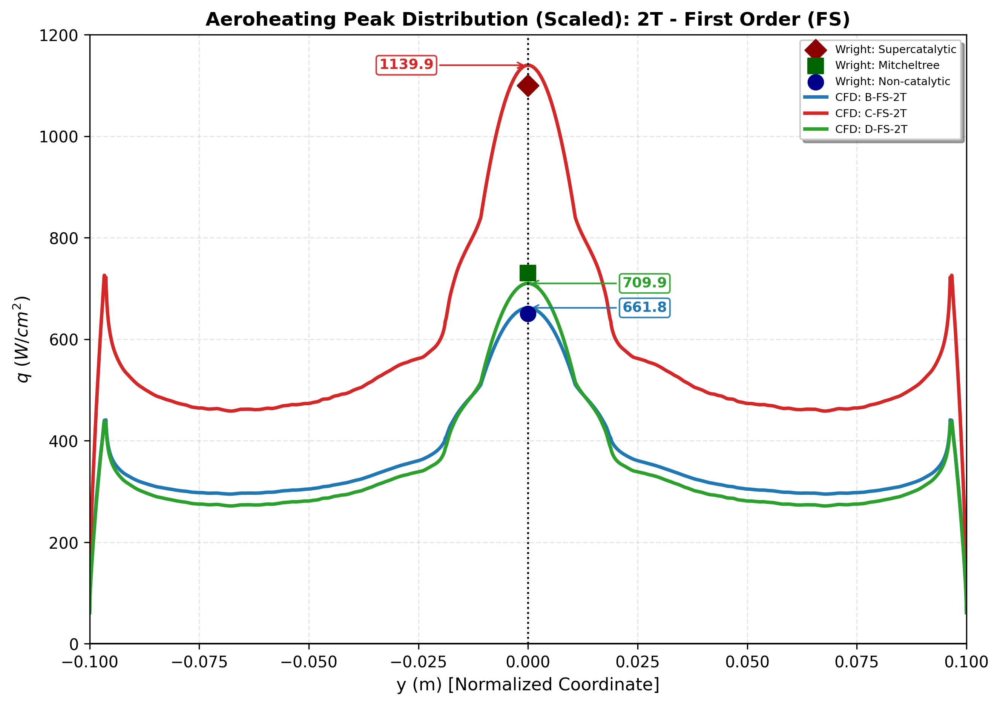

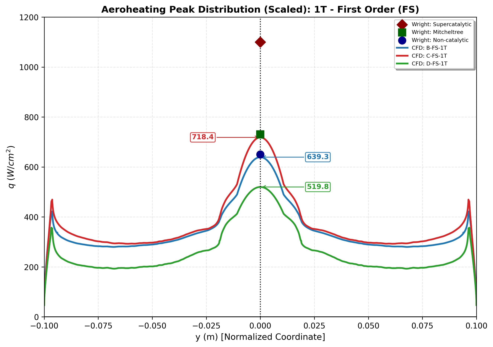
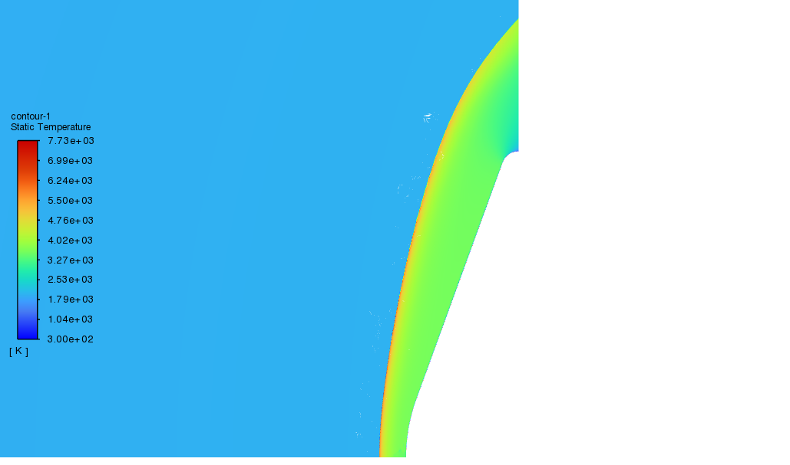


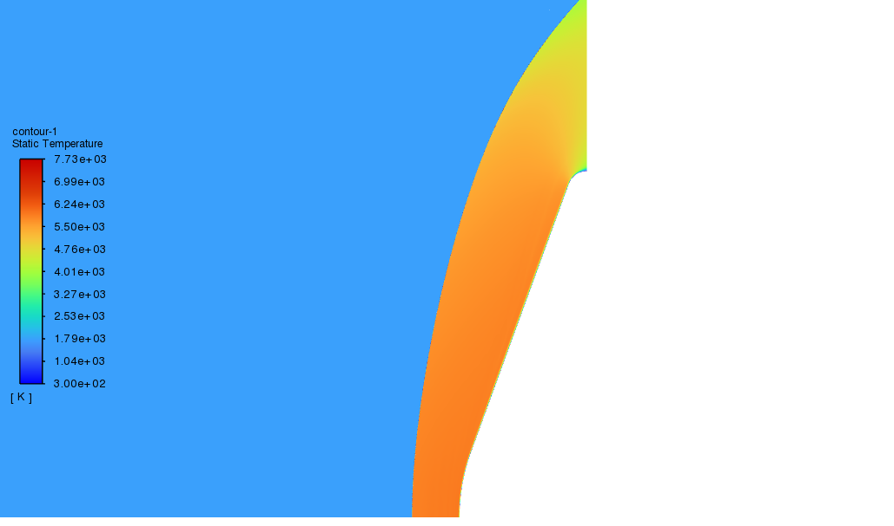
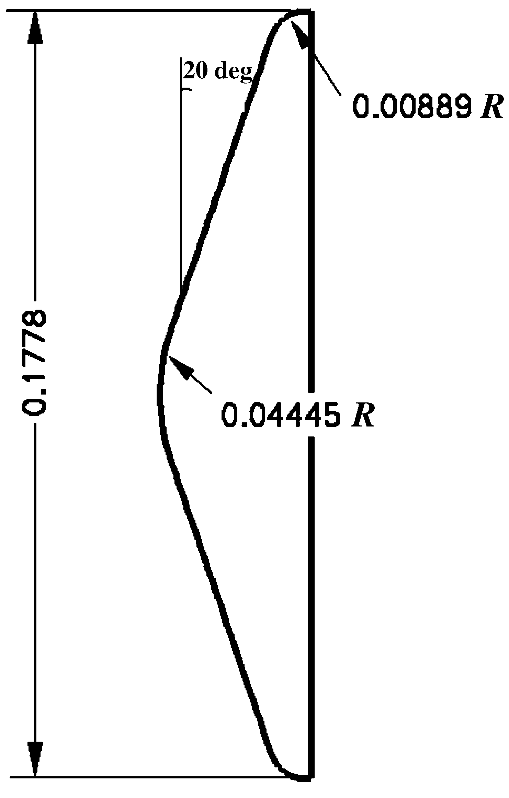

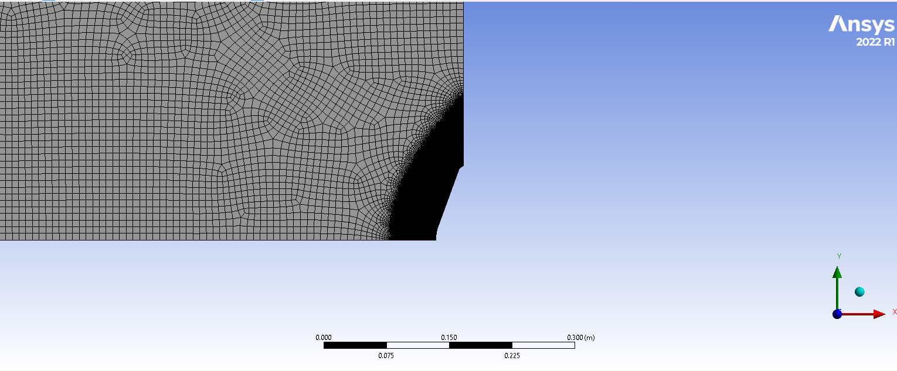
Model equations
The two-temperature model solves an extra conservation equation for the vibrational energy \(e_v\):
$$\frac{\partial (\rho e_v)}{\partial t} + \nabla\cdot(\rho e_v \mathbf{u}) = -\nabla\cdot\mathbf{q}_v + Q_{T\text{-}V} + \sum_s \dot{\omega}_s\, e_{v,s}$$Energy exchange between translational and vibrational modes follows Landau–Teller, with the Millikan–White relaxation time and Park's high-temperature correction:
$$Q_{T\text{-}V} = \sum_s \rho_s \frac{e_{v,s}^{*}(T) - e_{v,s}}{\tau_s}, \qquad \tau_s = \tau_s^{MW} + \tau_s^{P}$$Dissociation rates are evaluated at Park's controlling temperature, which delays dissociation until the vibrational modes have been excited:
$$T_a = \sqrt{T\,T_v}$$Wall heat flux, with \(n\) the wall-normal coordinate pointing into the gas, sums conduction in both energy modes and the enthalpy carried by diffusing species:
$$q_w = \kappa \left(\frac{\partial T}{\partial n}\right)_w + \kappa_v \left(\frac{\partial T_v}{\partial n}\right)_w + \sum_s \rho D_s h_s \left(\frac{\partial Y_s}{\partial n}\right)_w$$Starship re-entry aerodynamics
How Starship's body flaps and canards shape its aerodynamics through the descent, from M 4.05 down to subsonic speed, computed on a 15.5-million-cell mesh.
Set-up
I built a simplified Starship geometry with forward canards and aft body flaps and meshed it with a mix of structured and unstructured cells, with bodies of influence around the vehicle and its wake. A three-level mesh study (7.22, 15.5 and 16.34 million cells) showed the drag coefficient changing by less than 0.5 % between the two finest meshes, so the 15.5-million-cell mesh was used. The flow conditions follow a descent profile: twelve points from M 4.05 at 35 km to M 0.31 at 1 km, with standard-atmosphere density, temperature and viscosity at each altitude.
Results
- The lift coefficient spikes in the transonic range (M ≈ 0.8–1.2), peaking just above M 1, then settles to a lower, steady value.
- Drag shows the usual transonic rise, with its maximum between M 0.9 and 1.1, and falls steadily above M 2.
- The pitching moment is slightly negative at low Mach, becomes more nose-down through the transonic range and returns towards neutral at supersonic and hypersonic speeds.
Can control-surface effects be superposed?
To avoid simulating every flap and canard combination, I tested whether their contributions add linearly. Cases with opposite deflections (fins −60° with canards +60°, and the reverse) reproduced the expected coefficients within about 10 % for the fins and 15 % for the canards. That is good enough to interpolate between configurations in a first design pass. A limitation: only one control-surface configuration was run through the whole Mach sweep.
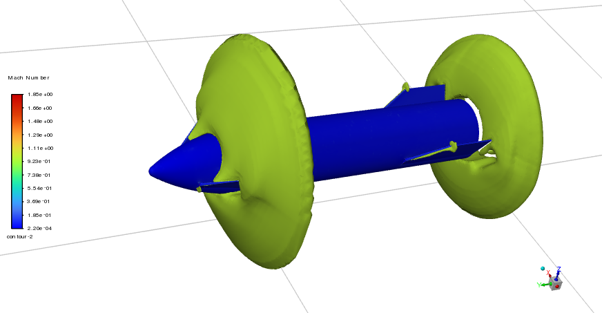


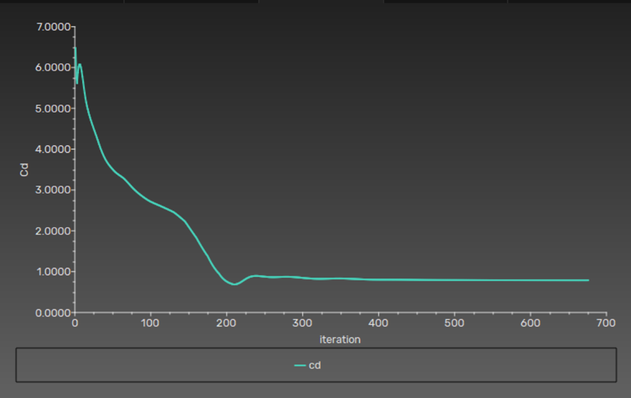
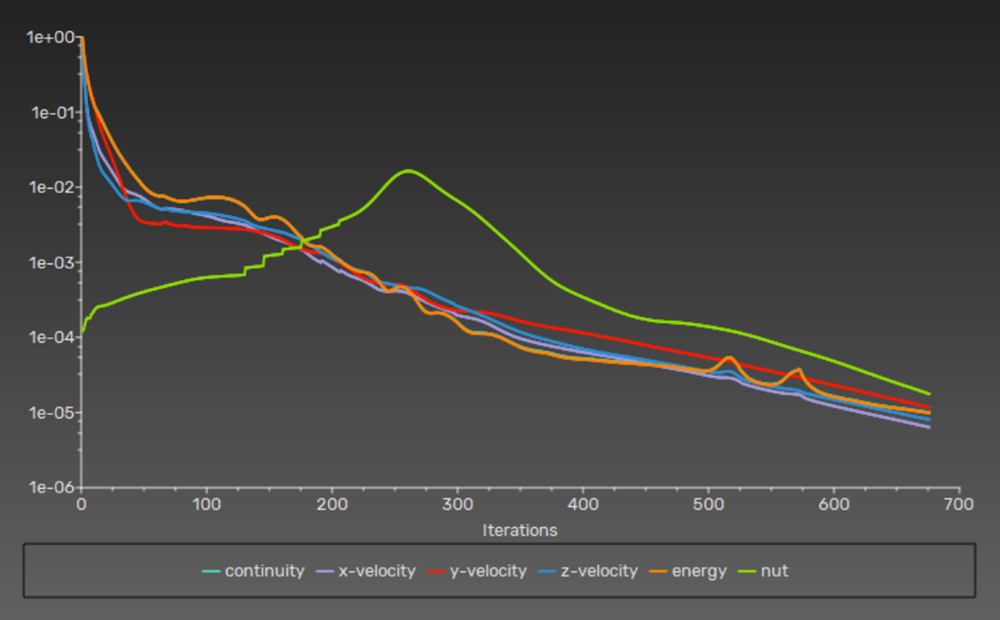
NACA 2412 at 30°: uRANS, DES and LES compared
One stalled airfoil, three ways of treating turbulence: what each method resolves, and what it costs in mesh and time step.
The case is a NACA 2412 with a 1 m chord at 30° angle of attack, well past stall, at M 0.3 and sea-level conditions (293 K, 101,325 Pa), which gives \(Re \approx 6.85 \times 10^6\). The domain is a C-type far field reaching 10 chords upstream and 15 downstream. Inlet turbulence intensity was 10 % in all cases.
- uRANS (k-ω SST) averages out all turbulent fluctuations and models them. It captures the large-scale shedding cycle cheaply. Needs \(y^+ \approx 1\).
- DES runs RANS in the attached boundary layer and switches to LES in the separated region, based on the local grid spacing. Needs \(y^+ < 5\) near the wall and fine, nearly isotropic cells in the wake.
- LES (Smagorinsky subgrid model) resolves the large eddies everywhere and models only the smallest scales. It is the most expensive by far and needs the finest mesh near the wall.
The videos show how much more small-scale structure DES and LES keep in the wake compared with uRANS.


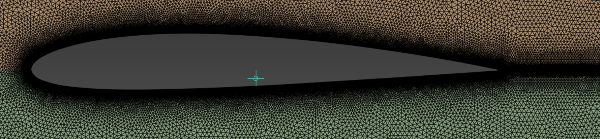


Falcon 9 grid fins
My bachelor's thesis: the aerodynamic characteristics of a re-entry control surface across the Mach range.
Grid fins are lattices of thin intersecting plates. They give a large control force for their size and need little hinge torque, which is why Falcon 9 uses them to steer its first stage back through the atmosphere. The transonic range is the hard part: the small cells can choke, which raises drag and reduces the fin's effectiveness.
What I did
- Built a simplified CAD model of the fin.
- Ran CFD simulations on both 2D and 3D models and compared the results.
- Carried out mesh-sensitivity studies (Figure 4).
- Post-processed the flow fields in ANSYS CFD-Post.


Impinging jet heat transfer in ANSYS CFX
A round jet hitting a heated plate, rebuilt in CFX for Framatome and compared with a published STAR-CCM+ verification case.
Impinging jets give very high local heat-transfer rates, but they are a tough case for turbulence models. The test case: nozzle diameter \(D = 25\) mm, nozzle-to-plate distance \(H/D = 2\), \(Re = 20{,}000\), a fully developed pipe-flow profile at the nozzle exit and a uniform heat flux on the plate. The target result is the local Nusselt number along the plate, which for \(H/D < 4\) has two peaks.
Approach
- CFX has no true 2D mode, so I modelled the axisymmetric flow as a 5° wedge, one cell thick.
- Prescribed the developed inlet profile with an expression based on the one-seventh power law and the Blasius friction factor.
- Added a body of influence to refine the mesh around the nozzle exit and the stagnation region.
- Ran k-ε as the main model and varied the wall-layer mesh across five cases (maximum \(y^+\) from about 20 to 127) to see how the Nusselt number depends on it.
Outcome
The CFX results did not reproduce the double Nusselt peak as clearly as the reference, and the values differed. Part of the reason is that CFX only offers scalable wall functions with k-ε, which limits how well the near-wall heat transfer can be resolved. My conclusion for Framatome was that this set-up in CFX is not the most accurate route for this case.


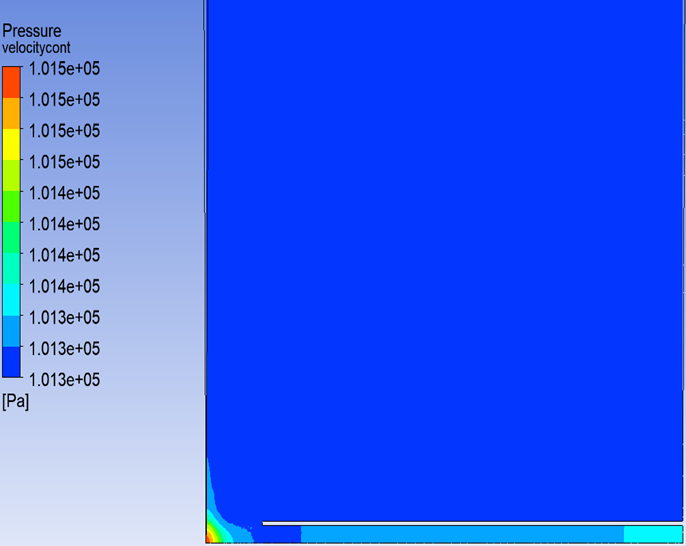


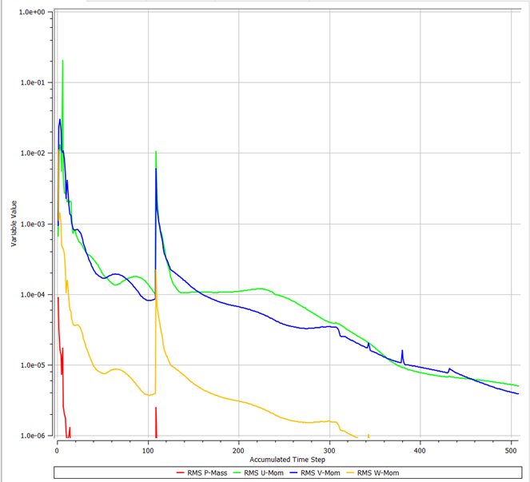
Urban wind around a new high-rise
Would adding a tall building make the streets around it too windy for pedestrians? CFD of a scaled city block, compared with wind-tunnel tests.
- Model: the district scaled 1:500 to match the wind-tunnel model, so the results could be compared directly.
- Inflow: the same power-law profile as in the tunnel, \(V(z) = V_m (z/10)^{\alpha}\), with \(\alpha = 0.19\) for terrain category III and 0.24 for category IV. Turbulence intensity was tuned between 15 and 35 %, and about 25 % matched best.
- Turbulence model: realizable k-ε, constant-density air.
- Mesh: a coarse and a fine mesh (about 12.7 million cells) with refinement around the buildings.
- Cases: wind from 0°, 45° and 90°.
Comparison with the wind tunnel
The zones of strong wind matched the tunnel in all three directions, the strongest being next to the tallest building. The differences were local: at 45° the flow in one passage was a little faster than measured, and at 90° the CFD showed an almost stagnant zone between two buildings that the tunnel did not. I attribute the differences to mesh resolution, the k-ε constants, the inlet profile and the assumed turbulence intensity.


Aero Lab
Two small calculators I use for quick checks: first-cell height for a target \(y^+\), and a Fay–Riddell stagnation-point heating estimate. Both are textbook first estimates, not a substitute for CFD.
First-cell height for a target \(y^+\)
Flat-plate estimate of skin friction, boundary-layer thickness and the wall-normal size of the first cell.
First-cell height \(\Delta y\)
| Reynolds number \(Re_L\) | – |
|---|---|
| Skin friction \(c_f\) at \(x = L\) | – |
| Wall shear \(\tau_w\) / friction velocity \(u_\tau\) | – |
| Boundary-layer thickness \(\delta_{99}\) | – |
| z [km] | T [K] | p [Pa] | ρ [kg/m³] | μ [μPa·s] | ν [m²/s] |
|---|
Fay–Riddell stagnation-point heat flux
Laminar heat flux at the stagnation point of a sphere, using the same simplified method as Chapter 4 of my thesis: perfect-gas normal shock, Newtonian velocity gradient, Sutherland viscosity.
Stagnation-point heat flux \(q_w\)
| Freestream \(p_\infty\), \(T_\infty\), \(\rho_\infty\), \(V_\infty\) | – |
|---|---|
| Post-shock \(p_e\), \(T_e\), \(\rho_e\) | – |
| Wall density \(\rho_w\) | – |
| Viscosity \(\mu_e\) / \(\mu_w\) | – |
| Velocity gradient \((du_e/dx)_s\) | – |
| \(h_{0e}\) / \(h_w\) / \(\Delta h\) | – |
| Dissociation factor | – |
| Pitot pressure ratio \(p_{02}/p_{01}\) | – |
Assumptions: steady laminar flow at the stagnation point; the shock is treated as a normal shock in a calorically perfect gas (\(\gamma = 1.30\) and \(Pr = 0.70\) for CO₂, \(\gamma = 1.40\) and \(Pr = 0.71\) for air), and the post-shock static state is used as the boundary-layer edge, as in the thesis. Strictly, the edge state is the stagnation state behind the shock; for the T5 case the difference is a few per cent. Constant pressure across the boundary layer (\(p_w = p_e\)). \(h_D\) is an input because it needs an equilibrium chemistry calculation: 0.29 for T5 is the recombination energy of the dissociated freestream (CO, O, O₂) back to CO₂, relative to \(h_0\). For flight cases, leave it at zero unless the gas behind the shock is dissociated.
Equations used
First-cell height
Atmosphere and viscosity (ideal gas, Sutherland's law):
$$\rho = \frac{p(z)}{R\,T(z)}, \qquad \mu = \mu_0\left(\frac{T}{T_0}\right)^{3/2}\frac{T_0 + S}{T + S}, \qquad \nu = \frac{\mu}{\rho}$$Local flat-plate skin friction and boundary-layer thickness at \(x = L\), switching at \(Re_L = 5\times10^5\) (Blasius for laminar flow, Prandtl's one-seventh power law for turbulent flow):
$$Re_L = \frac{U_\infty L}{\nu}, \qquad c_f = \begin{cases} 0.664\,Re_L^{-1/2} \\ 0.0592\,Re_L^{-1/5}\end{cases}, \qquad \delta_{99} = \begin{cases} 5.0\,L\,Re_L^{-1/2} \\ 0.37\,L\,Re_L^{-1/5}\end{cases}$$ $$\tau_w = \tfrac12 \rho U_\infty^2 c_f, \qquad u_\tau = \sqrt{\tau_w/\rho}, \qquad \Delta y = \frac{y^+\,\nu}{u_\tau}$$Fay–Riddell
Normal-shock relations for a perfect gas:
$$\frac{p_e}{p_\infty} = 1 + \frac{2\gamma}{\gamma+1}\left(M_\infty^2 - 1\right), \qquad \frac{\rho_e}{\rho_\infty} = \frac{(\gamma+1)M_\infty^2}{2 + (\gamma-1)M_\infty^2}, \qquad \frac{T_e}{T_\infty} = \frac{p_e/p_\infty}{\rho_e/\rho_\infty}$$Newtonian stagnation-point velocity gradient, wall state and enthalpies:
$$\left(\frac{du_e}{dx}\right)_s = \frac{1}{R_n}\sqrt{\frac{2\,(p_e - p_\infty)}{\rho_e}}, \qquad \rho_w = \frac{p_e}{R\,T_w}, \qquad h_{0e} = c_p T_\infty + \tfrac12 V_\infty^2, \quad h_w = c_p T_w$$Heat flux (Fay and Riddell, 1958), with the dissociation factor \(\Phi\) depending on the boundary-layer and wall assumption:
$$q_w = 0.763\,Pr^{-0.6}\,(\rho_e\mu_e)^{0.4}\,(\rho_w\mu_w)^{0.1}\,\sqrt{\left(\frac{du_e}{dx}\right)_s}\;(h_{0e} - h_w)\;\Phi$$ $$\Phi_{\text{equilibrium}} = 1 + \left(Le^{0.52} - 1\right)\frac{h_D}{h_{0e}}, \qquad \Phi_{\text{frozen, catalytic}} = 1 + \left(Le^{0.63} - 1\right)\frac{h_D}{h_{0e}}, \qquad \Phi_{\text{frozen, non-catalytic}} = 1 - \frac{h_D}{h_{0e}}$$Total-pressure ratio across the normal shock (Rayleigh pitot formula):
$$\frac{p_{02}}{p_{01}} = \left[\frac{(\gamma+1)M_\infty^2}{2 + (\gamma-1)M_\infty^2}\right]^{\frac{\gamma}{\gamma-1}}\left[\frac{\gamma+1}{2\gamma M_\infty^2 - (\gamma-1)}\right]^{\frac{1}{\gamma-1}}$$References
- Fay, J. A., and Riddell, F. R. “Theory of Stagnation Point Heat Transfer in Dissociated Air.” Journal of the Aeronautical Sciences, 25(2), 73–85, 1958. doi:10.2514/8.7517
- Anderson, J. D. Hypersonic and High-Temperature Gas Dynamics, 2nd ed. AIAA, 2006.
- Schlichting, H., and Gersten, K. Boundary-Layer Theory, 9th ed. Springer, 2017.
- White, F. M. Viscous Fluid Flow, 3rd ed. McGraw-Hill, 2006.
- Sutherland, W. “The Viscosity of Gases and Molecular Force.” Philosophical Magazine, 36(223), 507–531, 1893.
- U.S. Standard Atmosphere, 1976. NOAA, NASA and USAF, 1976.
- NASA Glenn Research Center. “Mars Atmosphere Model.”
- Wright, M. J., Olejniczak, J., Brown, J. L., Hornung, H. G., and Edquist, K. T. “Modeling of Shock Tunnel Aeroheating Data on the Mars Science Laboratory Aeroshell.” Journal of Thermophysics and Heat Transfer, 20(4), 641–651, 2006. doi:10.2514/1.19896
- Frelek, K. Validation of Laminar Aeroheating Models for the Mars Science Laboratory Forebody Against T5 Shock-Tunnel Data. M.Sc. thesis, Warsaw University of Technology, 2026.
Travel
A few photos from trips to Japan, South Korea and Greece.
Japan. Tokyo, Kyoto, Nara and Fukuoka: Fushimi Inari, Kiyomizu-dera, the deer in Nara Park and ramen at the yatai stalls in Fukuoka.
South Korea. Seoul: Myeongdong, Dongdaemun, Gangnam and Gyeongbokgung Palace.
Greece. Summer on Crete, by the sea.

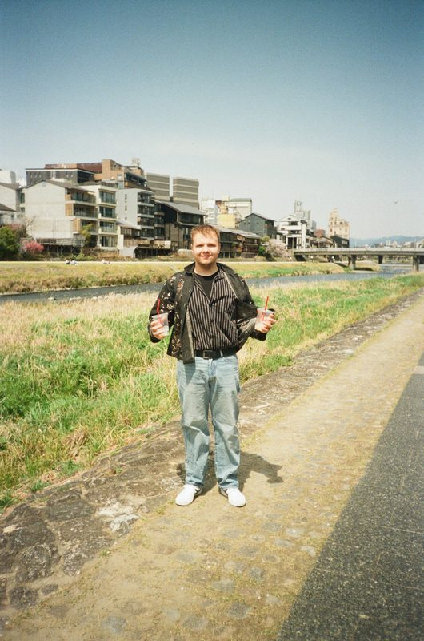


More photos on Instagram.